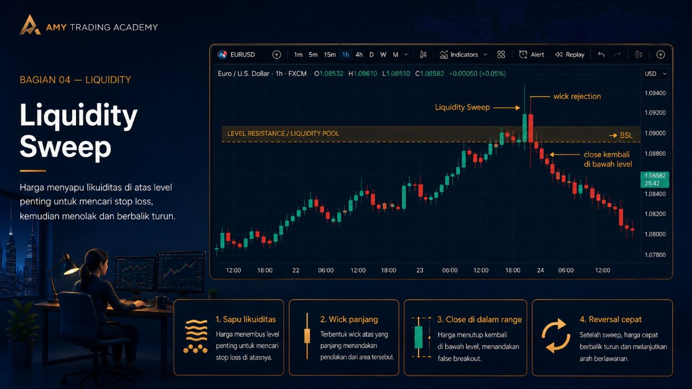
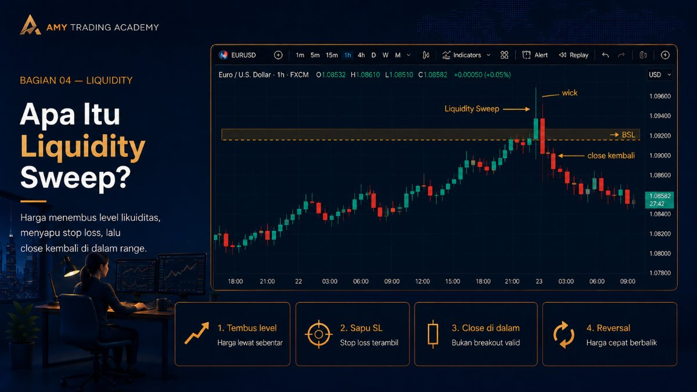
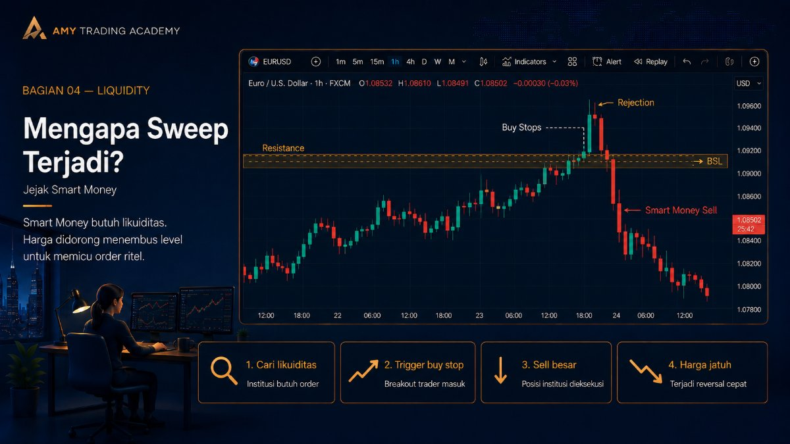
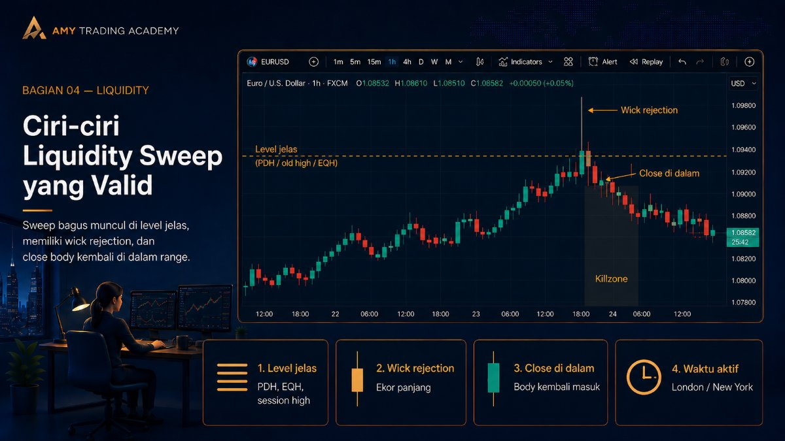
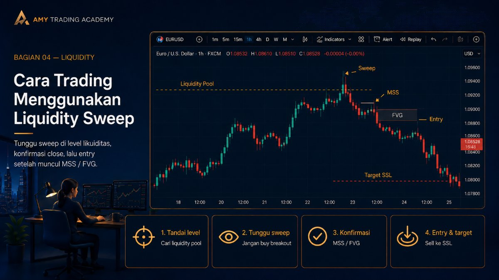

Liquidity Sweep

Setelah kita tahu di mana uang (Liquidity Pool) disembunyikan, pertanyaan selanjutnya adalah: apa yang terjadi ketika harga akhirnya menyentuh area tersebut? Dalam metodologi SMC/ICT, cara harga bereaksi saat menembus Liquidity Pool akan menentukan apakah kita akan mendapatkan peluang entry yang bagus atau tidak.
Reaksi pertama dan yang paling dicari oleh trader SMC adalah Liquidity Sweep (sering disingkat Sweep). Bagi trader ritel klasik, fenomena ini sering bikin frustrasi dan biasanya mereka sebut sebagai Fakeout atau False Breakout (penembusan palsu). Mari kita pelajari mengapa ini terjadi dan bagaimana memanfaatkannya.
Apa Itu Liquidity Sweep?

Liquidity Sweep terjadi ketika harga bergerak menembus sebuah level penting (seperti Old High atau Old Low) hanya untuk menyapu Stop Loss yang ada di sana, tetapi harga gagal bertahan di luar level tersebut. Bukannya terus melaju, harga malah ditarik balik dengan cepat dan candle ditutup (close) kembali di dalam batas level sebelumnya.
Secara visual di chart, sebuah Sweep akan meninggalkan jejak berupa ekor candle (wick) yang panjang yang menusuk keluar dari level Support/Resistance, sementara badan candle (body) tertutup rapi di dalam.
Mengapa Sweep Terjadi? Ini Adalah Jejak Smart Money

Bayangkan kamu adalah institusi besar yang ingin melakukan Sell besar-besaran. Kamu butuh pembeli (Buy Side Liquidity) yang ada di atas level Resistance. Kamu sengaja menyuntikkan sedikit dana untuk mendorong harga sedikit menembus Resistance.
Apa yang terjadi saat harga menembus Resistance?
- Stop Loss para penjual (yang berupa order Buy) otomatis tereksekusi.
- Trader breakout yang melihat harga menembus Resistance bersemangat dan klik tombol Buy.
Tiba-tiba, ada lonjakan order Buy yang sangat besar. Di detik itulah, kamu (sebagai Smart Money) membuang seluruh posisi Sell raksasamu ke pasar. Karena order Sell milikmu jauh lebih masif daripada kekuatan Buy ritel, harga langsung tertekan turun dengan sangat kuat dan cepat.
Karena proses ini terjadi dalam waktu singkat (hanya untuk mengisi order institusi), harga tidak punya alasan untuk diam berlama-lama di atas sana. Hasil akhirnya pada chart adalah: candle naik, mengambil uang (liquidity), lalu turun dan ditutup di bawah, meninggalkan ekor (wick) di atas. Ekor inilah bukti fisik bahwa Smart Money baru saja mengambil likuiditas.
Ciri-ciri Liquidity Sweep yang Valid

Tidak semua ekor candle adalah Sweep yang bisa ditradingkan. Berikut adalah ciri-ciri Sweep yang berkualitas tinggi:
- Konteks yang Jelas: Sweep harus terjadi di level liquidity yang jelas (seperti PDH/PDL, Session High/Low, atau Equal Highs/Lows). Ekor panjang di tengah-tengah rentang harga (nowhere) bukanlah Sweep, itu cuma noise.
- Wick Rejection: Semakin panjang ekor yang menusuk level liquidity, dan semakin kecil body candle-nya (seperti pinbar), semakin kuat indikasi bahwa itu adalah Sweep sejati.
- Close Body di Dalam Range: Sangat penting bahwa harga (body candle) tidak close di luar level likuiditas. Jika body candle close dengan kuat di luar level tersebut, itu bukan Sweep, melainkan Liquidity Run (akan dibahas di bab selanjutnya), yang berarti harga mungkin akan melanjutkan trennya.
- Waktu Terjadinya (Killzone): Sweep yang paling akurat biasanya terjadi pada waktu-waktu volatilitas tinggi, seperti pembukaan sesi London atau pembukaan sesi New York (disebut Killzones).
Cara Trading Menggunakan Liquidity Sweep

Mengetahui adanya Sweep bukan berarti kamu langsung klik Buy atau Sell. Kita butuh konfirmasi. Berikut adalah alur (SOP) standarnya:
- Tandai Liquidity Pool: Di Time Frame besar (misalnya H1 atau M15), tandai garis horizontal pada Previous Day High (BSL).
- Tunggu Sweep: Pantau saat harga mendekati garis tersebut. Biarkan harga menembusnya. Jangan entry breakout!
- Konfirmasi Wick: Tunggu candle tersebut close. Pastikan ia meninggalkan wick di atas garis dan body-nya close di bawah garis.
- Cari Konfirmasi di LTF (Lower Time Frame): Turun ke time frame yang lebih kecil (misalnya M5 atau M1). Cari pola pembalikan arah, yaitu Market Structure Shift (MSS) ke bawah, yang meninggalkan Fair Value Gap (FVG).
- Entry: Entry posisi Sell di area FVG tersebut, dengan target Liquidity Pool terdekat di bawah (Sell Side Liquidity).
Pesan Penting: Di ICT/SMC, kita sering mendengar mantra "Turtle Soup". Ini adalah istilah dari buku legendaris Street Smarts untuk menggambarkan strategi trading yang mengeksploitasi false breakout (Liquidity Sweep) ini. Jangan jadi ritel yang terjebak breakout palsu, jadilah trader yang menunggangi pembalikan arahnya.